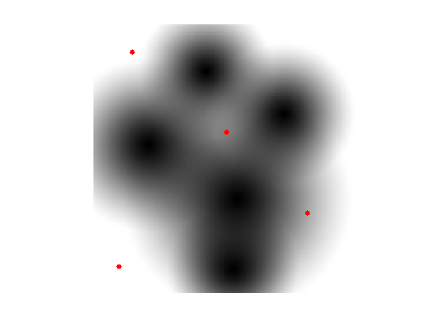
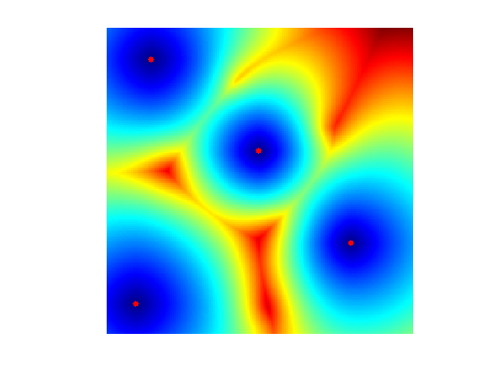
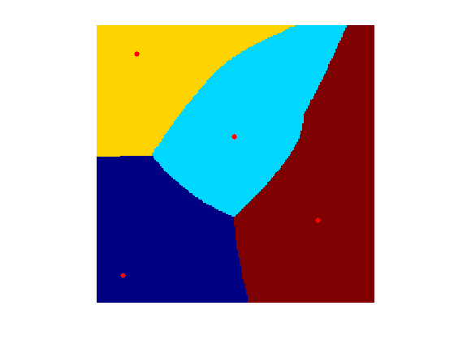
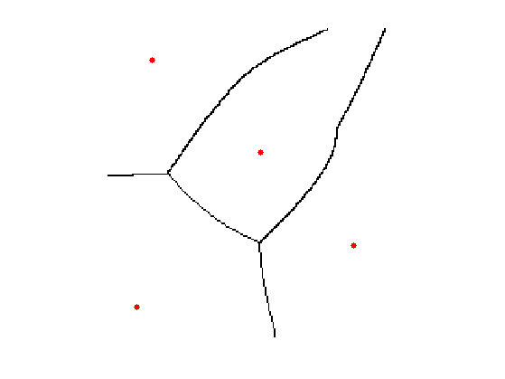
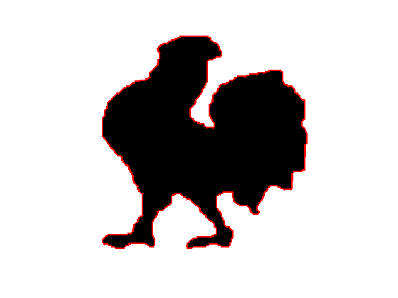
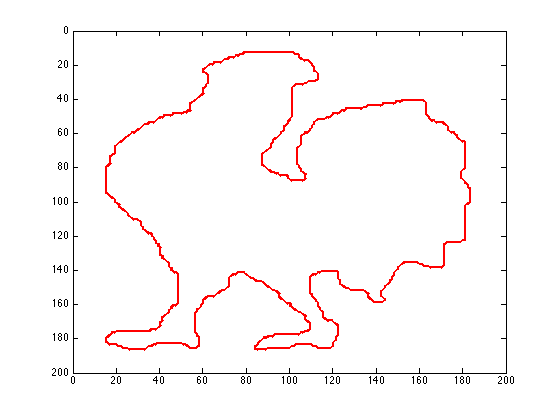
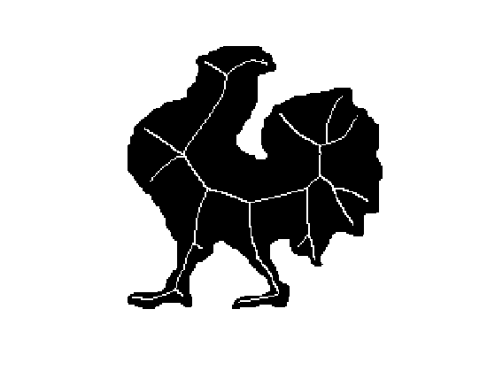
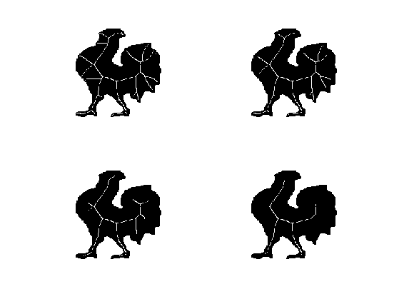

Geodesic Medial Axsis
This tour studies the computation of the medial axis using the Fast Marching.
Contents
Installing toolboxes and setting up the path.
You need to download the following files: signal toolbox, general toolbox and graph toolbox.
You need to unzip these toolboxes in your working directory, so that you have toolbox_signal, toolbox_general and toolbox_graph in your directory.
For Scilab user: you must replace the Matlab comment '%' by its Scilab counterpart '//'.
Recommandation: You should create a text file named for instance numericaltour.sce (in Scilab) or numericaltour.m (in Matlab) to write all the Scilab/Matlab command you want to execute. Then, simply run exec('numericaltour.sce'); (in Scilab) or numericaltour; (in Matlab) to run the commands.
Execute this line only if you are using Matlab.
getd = @(p)path(p,path); % scilab users must *not* execute this
Then you can add the toolboxes to the path.
getd('toolbox_signal/'); getd('toolbox_general/'); getd('toolbox_graph/');
Voronoi Diagram
The Voronoi diagram is the segmentation of the image given by the region of influence of the set of starting points.
Load a distance map.
n = 200;
W = load_image('mountain', n);
W = rescale(W,.25,1);
Select seed points.
pstart = [[20;20] [120;100] [180;30] [60;160]]; nbound = size(pstart,2);
Display the map and the points.
ms = 20; clf; hold on; imageplot(W); h = plot(pstart(2,:), pstart(1,:), '.r'); set(h, 'MarkerSize', ms);
Compute the geodesic distant to the whole set of points.
[D,S,Q] = perform_fast_marching(W, pstart);
Display the geodesic distance.
clf; hold on; imageplot(convert_distance_color(D, W)); h = plot(pstart(2,:), pstart(1,:), '.r'); set(h, 'MarkerSize', ms);
Display the Voronoi Segmentation.
clf; hold on; imageplot(Q); h = plot(pstart(2,:), pstart(1,:), '.r'); set(h, 'MarkerSize', ms); colormap jet(256);
Medial Axis from the Voronoi Map
The medial axis is difficult to extract from the singularity of the distance map. It is much more robust to extract it from the discontinuities in the Voronoi index map Q.
Compute the derivative, the gradient.
G = grad(Q);
Take it modulo nbound.
G(G<-nbound/2) = G(G<-nbound/2) + nbound; G(G>nbound/2) = G(G>nbound/2) - nbound;
Compute the norm of the gadient.
G = sqrt(sum(G.^2,3));
Compute the medial axis by thresholding the gradient magnitude.
B = 1 - (G>.1);
Display.
clf; hold on; imageplot(B); h = plot(pstart(2,:), pstart(1,:), '.r'); set(h, 'MarkerSize', ms);
Skeleton of a Shape
The sekeleton, also called Medial Axis, is the set of points where the geodesic distance is singular.
A binary shape is represented as a binary image.
n = 200; name = 'chicken'; M = load_image(name,n); M = perform_blurring(M,5); M = double( rescale( M )>.5 ); if M(1)==1 M = 1-M; end
Compute its boundary, that is going to be the set of starting points.
pstart = compute_shape_boundary(M); nbound = size(pstart,2);
Display the metric.
lw = 2; clf; hold on; imageplot(-M); h = plot(pstart(2,:), pstart(1,:), 'r'); set(h, 'LineWidth', lw); axis ij;
Parameters for the Fast Marching: constant speed W, but retricted using L to the inside of the shape.
W = ones(n); L = zeros(n)-Inf; L(M==1) = +Inf;
Compute the fast marching, from the boundary points.
options.constraint_map = L; [D,S,Q] = perform_fast_marching(W, pstart, options); D(M==0) = Inf;
Display the distance function to the boundary.
clf; hold on; display_shape_function(D); h = plot(pstart(2,:), pstart(1,:), 'r'); set(h, 'LineWidth', lw); axis ij;
Display the index of the closest boundary point.
clf; hold on; display_shape_function(Q); h = plot(pstart(2,:), pstart(1,:), 'r'); set(h, 'LineWidth', lw); axis ij;
Exercice 1: (check the solution) Compute the norm of the gradient G modulo nbound. Be careful to remove the boundary of the shape from this indicator. Display the thresholded gradient map.
exo1;
Exercice 2: (check the solution) Display the Skeleton obtained for different threshold values.
exo2;